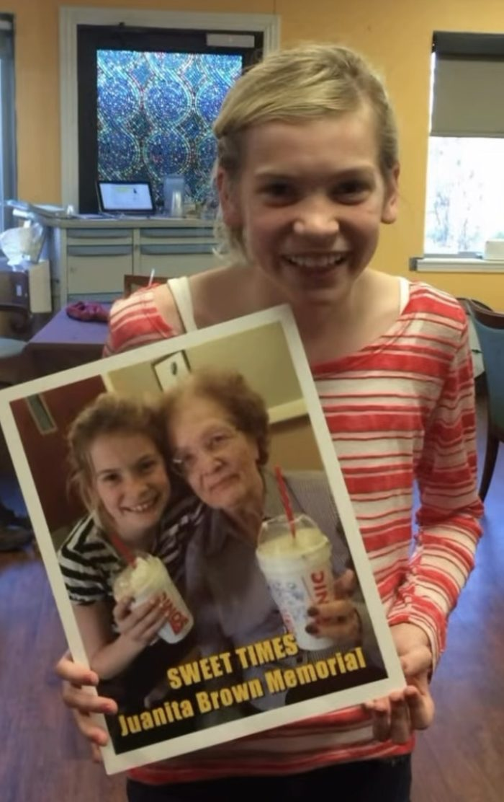

About us
From a message to a mission.
What started as a simple message of inclusion has grown into something much bigger.
Our story

You Can Sit With Us began with an idea every kid understands: it matters who saves you a seat. Anna Claire Hay has carried that message for years. In 2019 her work through You Can Sit With Us earned her recognition as Arkansas’s Top Youth Volunteer. In 2026 the You Can Sit With Us Foundation became an official 501(c)(3) nonprofit organization.
Becoming a nonprofit opened the door to greater impact. Our first official event, the Summer of Support Project, gave students in Springdale backpacks filled with school supplies and essential items, alongside free meals and a night of family fun, with support from Tyson Foods, Sam’s Club, Office Depot, and other community partners.
Our mission
To make sure every child in our community knows they belong, by meeting practical needs and spreading a message of inclusion.
What we believe
- Everyone gets a seat. No kid should feel left out.
- Practical help matters. A full backpack and a hot meal say “we see you” louder than words.
- Community makes it possible. Every event happens because neighbors show up.
Meet our founder
Anna Claire Hay is a proud native of Northwest Arkansas currently residing in Fayetteville. A graduate of the University of Arkansas and recent applicant to the University of Arkansas for Medical Sciences, Anna Claire is pursuing her lifelong dream of becoming Dr. Anna Claire Hay. She is the daughter of Greg and Kelly Brown of Springdale, Arkansas and John Hay of Houston, Texas.
Passionate about growth and challenge, Anna Claire recently completed her first half marathon and enjoys spending time with her Bernedoodle, Ace. A true Arkansas girl at heart, she loves Razorback baseball, DIY home projects, reading, and spending time on the lake.
Beyond the crown, Anna Claire has dedicated her life to serving others across the state of Arkansas. In 2019, she was honored as Arkansas’s Top Youth Volunteer for her work through her nonprofit organization, You Can Sit With Us, a 501(c)(3) focused on inclusion, kindness, and community impact. She is also a published author of the children’s book You Can Sit With Jackson, created to encourage kindness, acceptance, and inclusion among young students. In recognition of her commitment to service, Anna Claire has also been named a recipient of the President’s Volunteer Service Award Gold Award.
While attending the University of Arkansas, she was a member of Kappa Delta, where she served on the leadership team.
Anna Claire’s career in fashion and pageantry has taken her around the world, modeling for recognized designers including Ashley Lauren and Robin Towle Designs, with appearances spanning from Atlanta to Paris, France.
“Every child deserves to start the school year feeling prepared, confident, and supported.”Anna Claire Hay